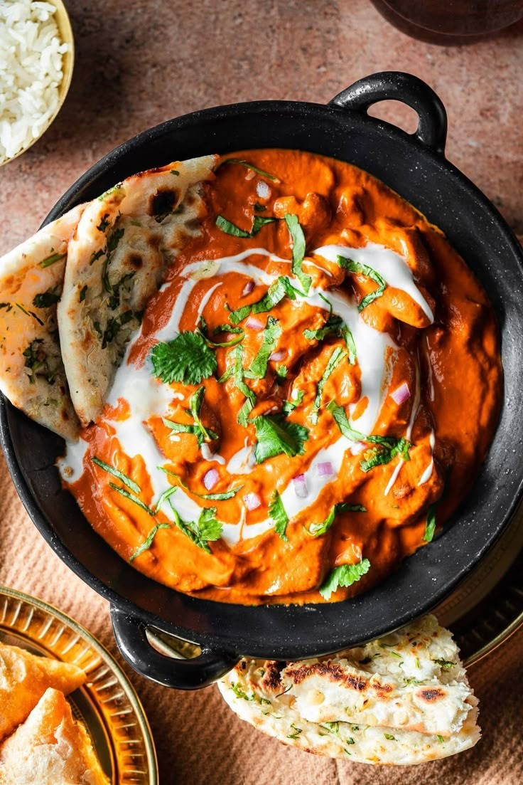

Butter Chicken

Category: Main Course
Ingredients:
- 500g boneless chicken (cut into cubes)
- 3 tbsp yogurt
- 1 tbsp lemon juice
- 1 tsp chili powder
- 1/2 tsp turmeric powder
- 1 tsp garam masala
- Salt to taste
- 2 tbsp butter + 1 tbsp oil
- 1 onion, finely chopped
- 1 tsp ginger garlic paste
- 2 tomatoes, pureed
- 1 tsp sugar
- 1/4 cup fresh cream
- 1 tbsp kasuri methi (dried fenugreek)
- Fresh coriander leaves to garnish
Instructions:
- Marinate chicken with yogurt, lemon juice, chili powder, turmeric, garam masala, and salt. Let it rest for 30 mins.
- Heat butter and oil in a pan. Add onions and sauté until golden.
- Add ginger garlic paste and cook until raw smell goes.
- Stir in tomato puree and cook till oil separates.
- Add marinated chicken. Cook on medium flame until chicken is fully cooked.
- Sprinkle sugar, kasuri methi, and pour in cream. Mix gently.
- Simmer for 5 more minutes. Garnish with coriander.
← Back to Home